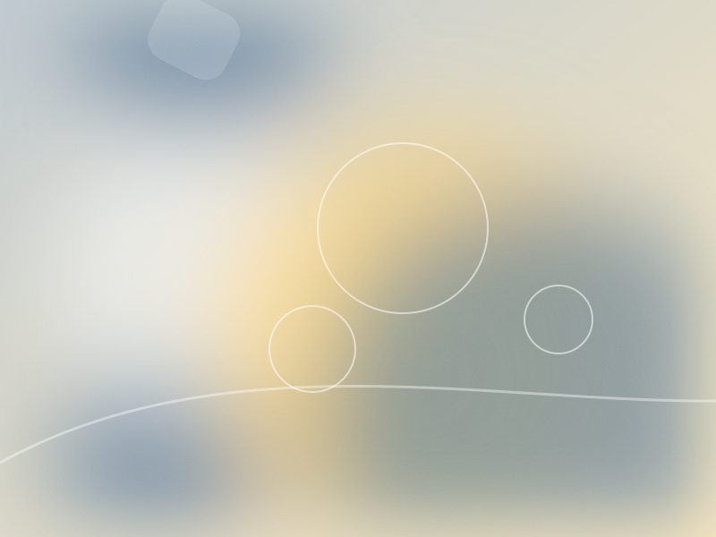
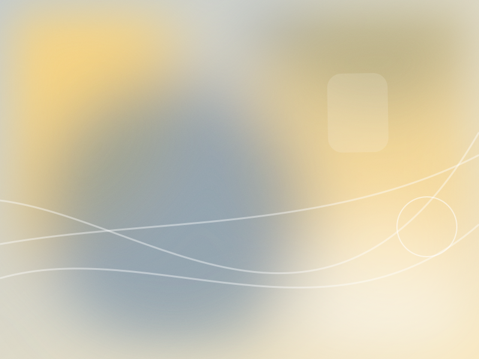
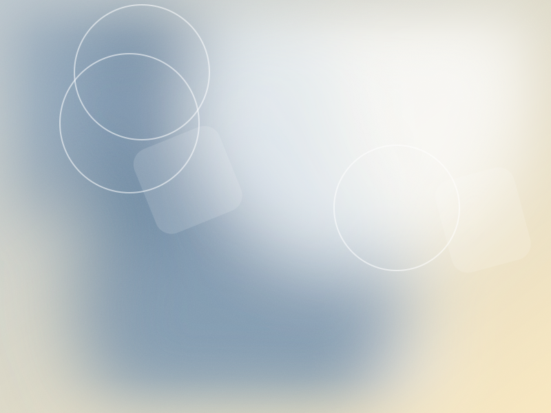
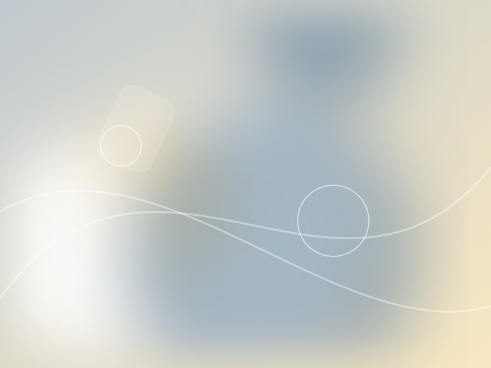
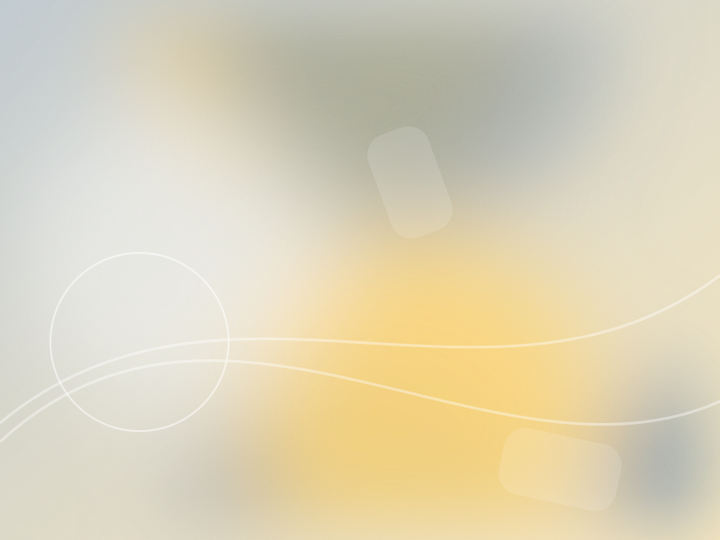
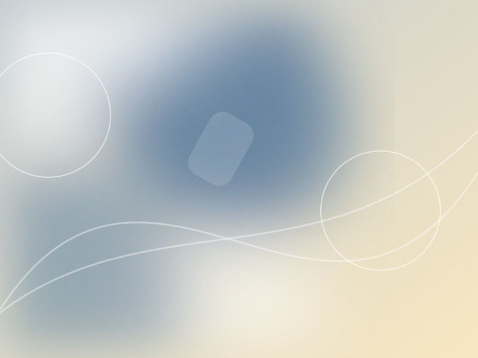
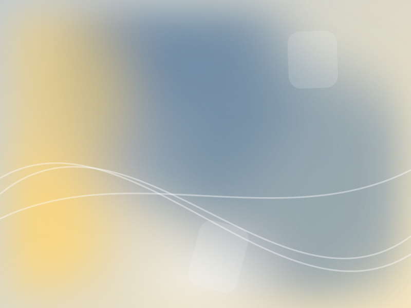
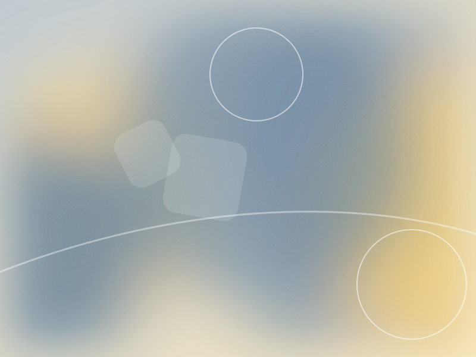

☼ DAYLIGHT DESK
A small workspace, right here
Make a little room
for what matters.
A friendly, offline dashboard for your day and your next idea.
Little local finds
Fern & Finch CafeQuiet tables · 8 min walk
Corner Book NookNew and used books · 12 min walk
Daylight mix
Window Seat RadioA fictional playlist · No audio stream
Minutes to hours
90 min = 1.5 hr
Make room for one good thing.
A small routine can help a busy day feel easier to shape. Use this workspace as a starting point, not another list to finish.
Pick one task that would make today feel complete.
Leave a little space between one thing and the next.
Notice one place, sound, or detail that makes the day yours.
Find a place for your next pause.
Fictional neighborhood stop · imagined quiet tables.
Fictional local listing · imagined shelves and new stories.
The illustrated path is decorative and not for real navigation.
A small playlist for a slower moment.
Shuffle the sample mix above to change the title. No audio stream or media service is connected.
Gentle focus · fictional listening pick.
Slow afternoon · fictional listening pick.
Easy energy · fictional listening pick.
Small utilities, close at hand.
Turn minutes into hours with the quick converter above.
Add a short task and check it off when you're done.
Browse imagined listings without location tracking.
Keep what worked. Let the rest go.
Think about when your day felt most open and clear.
Choose a next step that fits the time you actually have.
One finished task is enough to count as momentum.
Helpful by staying simple.
Daylight Desk is a local-only interface concept. Tasks remain in the page, local listings are fictional, and the media controls simulate a preview only.
There is no account or cloud storage behind this demo.
Use a trusted map for actual locations and travel.
Moodboard
A look inside Daylight Desk.
Generated art, parallax depth and glass details.





Explore
Everything in its place.

Plan
Discover plan at Daylight Desk.

Focus
Discover focus at Daylight Desk.

Breathe
Discover breathe at Daylight Desk.

Ship
Discover ship at Daylight Desk.
Plan
Discover plan at Daylight Desk.
Focus
Discover focus at Daylight Desk.
By the numbers
Small details, big feeling.
0Tasks cleared
0Calm focus
0On track
0Lighter days
Kind words
What people might say.
Demo plans
Pick a pretend plan.
Log in with the demo login to choose one. Nothing is charged.
Free
$0
- Browse everything
- Save favorites
Plus
$9
- Everything in Free
- Early access
- Member badge
Studio
$19
- Everything in Plus
- Priority demo support
- Custom themes
Good to know
Quick answers.
Is data saved?
Everything stays in your browser in this demo.
Is it a real app?
It is a fictional interface concept.
Can I customize it?
Colors and cards are easy to remix.
Ready?
Make a little room.
No sign-up needed; this is a visual concept, and no contact details are collected.
Explore the concept